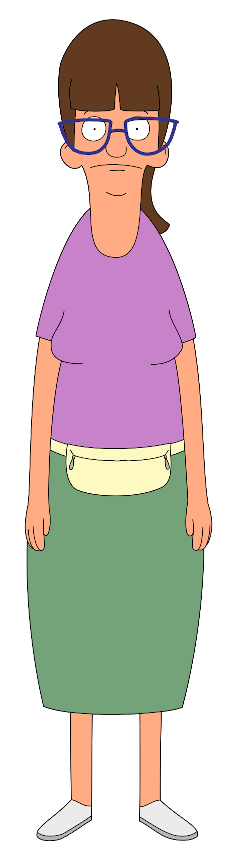

To understand the context of this problem, read the class #07 exercise sheet. After the deadline the problem stays open on Mooshak, but submissions no longer count towards your grade.
In this problem you should submit a function as described. Inside the function do not print anything that was not asked!
The name of the .py source file you submit to Mooshak should NOT start with a digit (you will get an error if you submit it like that).

Like Jimmy Pesto Jr, aunt Gayle Genarro, Bob's sister-in-law, wants to analyze the menu in a new way. Instead of looking up items by their names, she wants to know which menu items share the same price. She has the menu in dictionary where the keys are menu items and the values are their prices. Gayle wants to reverse this dictionary so that the prices are the keys, and the values are sets containing the names of the items that have that price.
Write a function super_swap(menu) that given a dictionary menu with string keys representing menu items and integer values representing prices, returns a new reverse dictionary where the new keys are the values and their new values are sets of the keys that had that value.
The following limits are guaranteed in all the test cases that will be given to your program:
| 1 ≤ |ingredients| ≤ 100 | number of items in the menu |
Example Function Calls
menu = {"donut":100, "burger":400, "soda":150, "pizza":400, "juice":150}
new_menu = super_swap(menu)
convert = [(k, type(v), sorted(list(v))) for (k,v) in new_menu.items()]
print(sorted(convert))
Example Output
[(100, <class 'set'>, ['donut']), (150, <class 'set'>, ['juice', 'soda']), (400, <class 'set'>, ['burger', 'pizza'])]